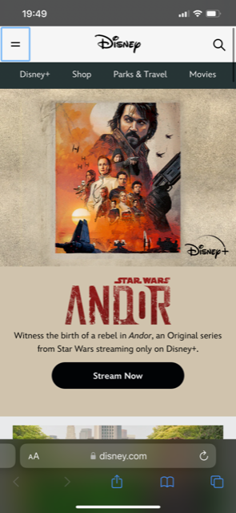
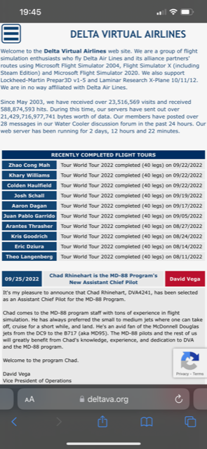

PARC: Contrast
Disney
For my first website I chose Disney.com. The Disney website follows an example of the contrast principle. By the different sizes and a wide variety of colors, you will notice important details that are there. And it helps your eyes to see the web page as a whole picture. Plus the colors are nice and easy on the eyes.
PARC: Repetition
Delta Virtual Airlines
For my second website I chose the Virtual Airline I am President of, Delta Virtual Airlines. On Deltava.org webpage, you can see how the repetition was used. The font and sizes are the same as you browse through the webpage, and the images are the same. I do see some whitespace and can easily navigate the webpage on mobile. Another thing I noted was the privacy terms box follows when scrolling.
White Space and Clean Design
BYU-I
On BYU-I website you can see good white space between images and sections on the mobile website which don't feel too cluttered. I find it easy to naviagte as there are clear divisions between sections and a variety of colors and images are used as backgrounds. By having white space it avoids clutter.